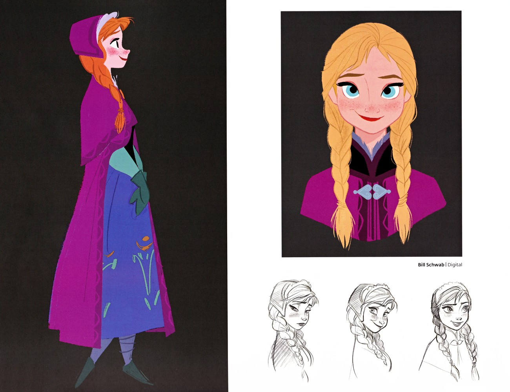
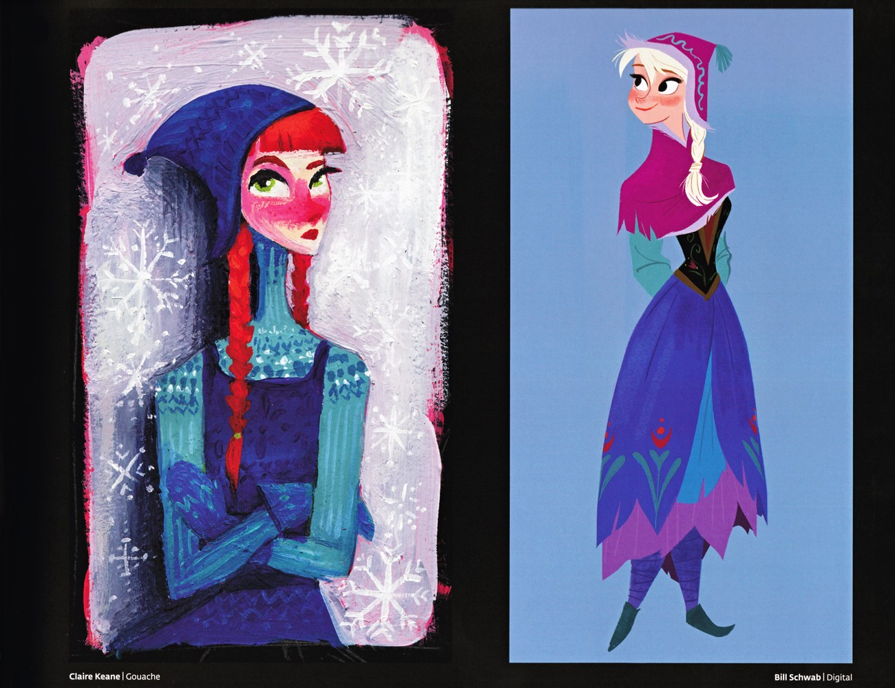
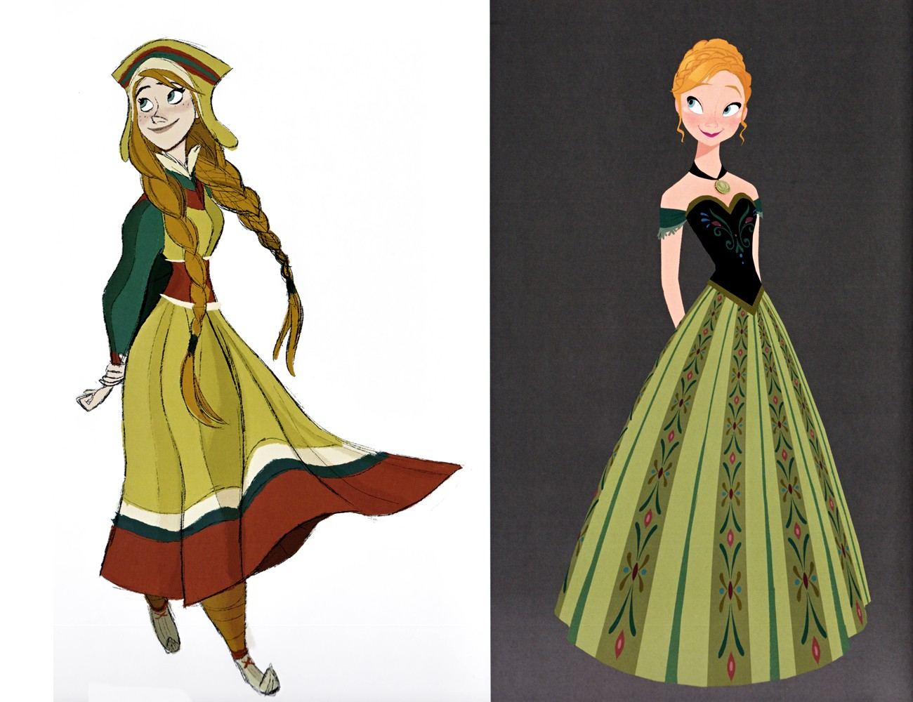
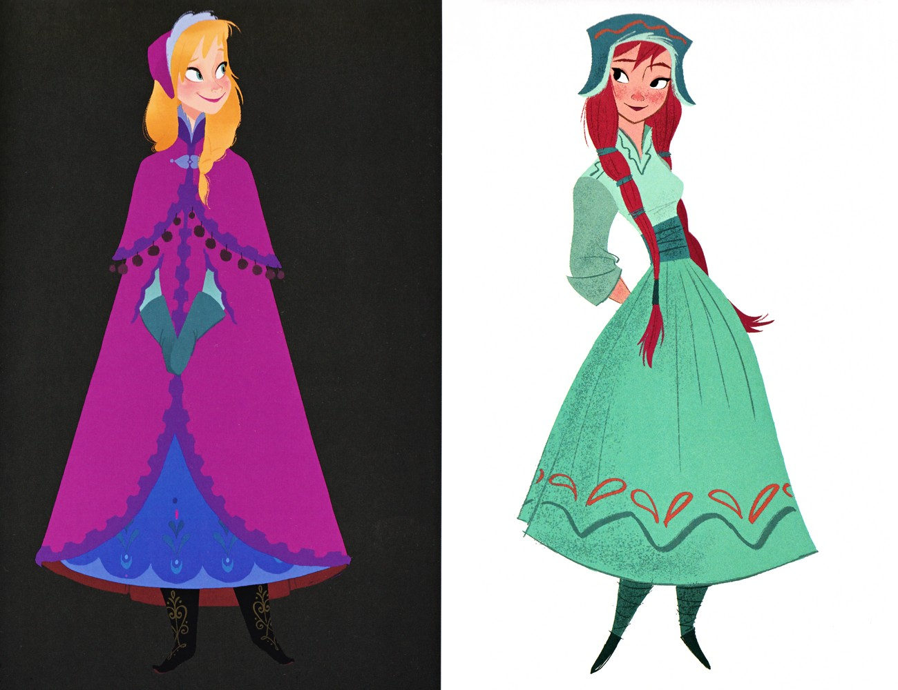
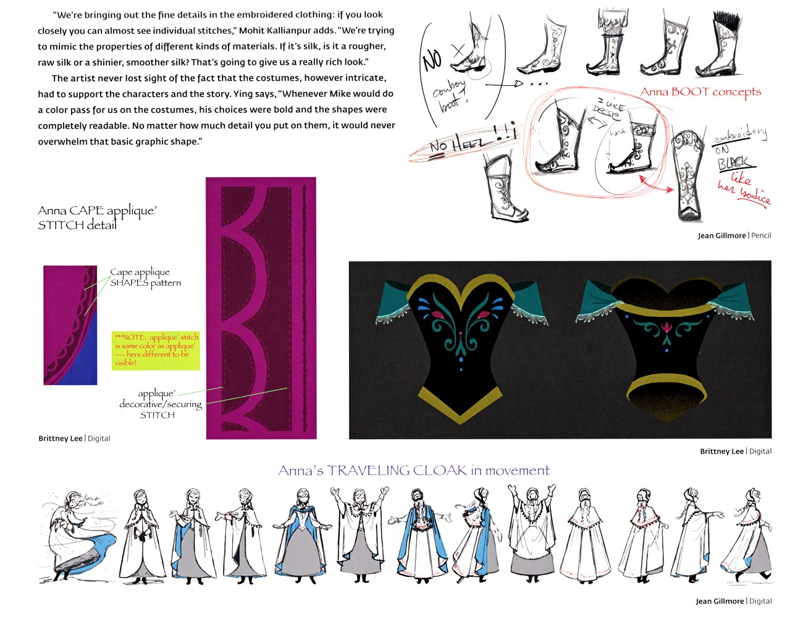
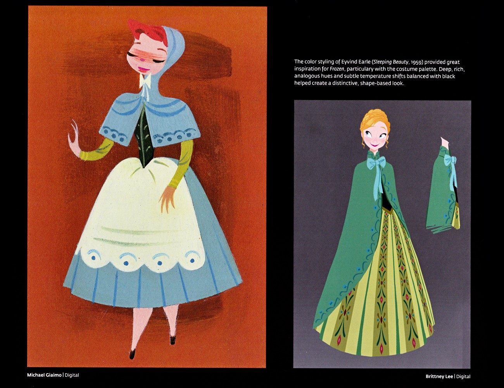
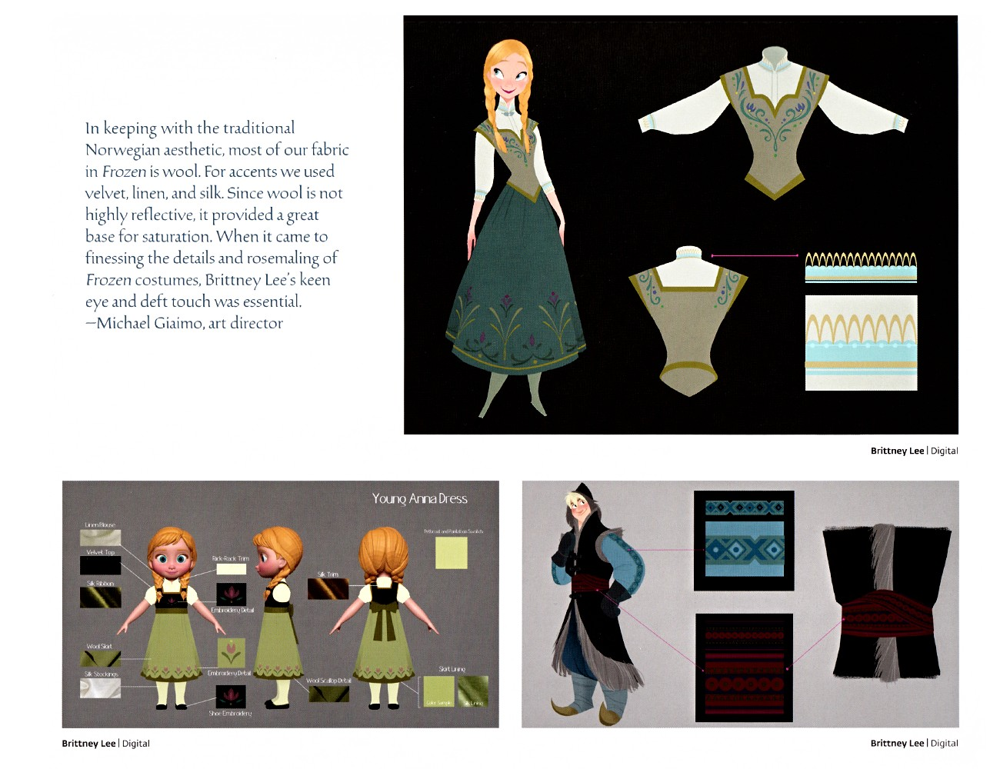
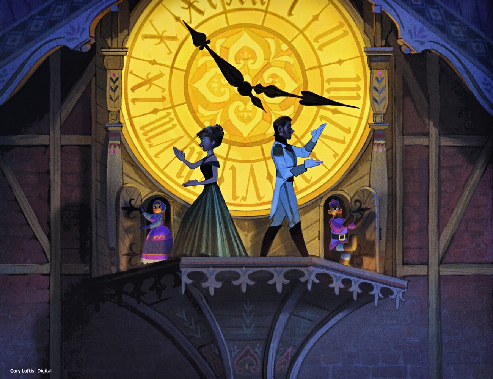
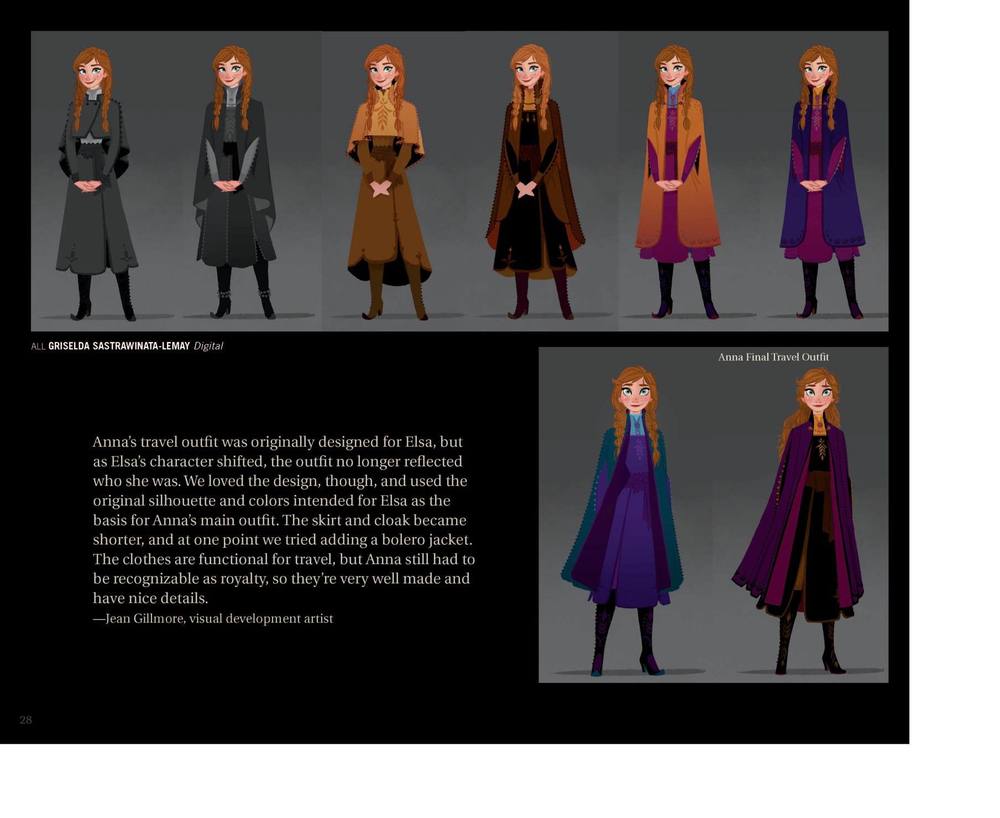

🌻 安娜 · 设定集精选
安娜 · 设定集精选
官方设定集里的安娜：角色、服装与关键场景
F1·F2
主电影
中/英
双语
🌻 角色设定

Anna 角色设定开篇
本页是 Anna 角色设定的开篇。故事总监 Paul Briggs、分镜师 Normand Lemay、监督动画师 Mark Henn 与设计师 Michael Giaimo 等谈论 Anna 的塑造：她不屈不挠、是故事的情感核心，延续了从白雪公主以来的迪士尼童话女主角传统；动画上需摆脱 Rapunzel 的影子，在快（F1设定集原页）

Anna 角色设计表
本页为 Anna 的角色设计表：左侧为洋红披风、蓝裙配绿手套的全身造型；右上为 Bill Schwab 绘制的编发与雀斑面部表情特写；底部一排为三组不同姿态的铅笔表情研究，用于确定角色表情范围。（F1设定集原页）

Anna 角色肖像
左侧 Claire Keane 的水粉画以红编发、蓝兜帽与冰雪纹理表现 Anna，风格奔放；右侧 Bill Schwab 的数字绘为洋红披风、蓝裙、紫绒球帽的旅行装 Anna，偏写实定稿感。（F1设定集原页）

幼年 Anna 成长与配色
Brittney Lee 以两组图呈现幼年 Anna：左侧为黄裙幼童、绿裙孩童、蓝裙背心大童三个成长阶段；右侧为淡黄睡衣配粉 ribbon 的全身设计。文字说明为呼应其阳光性格，成长阶段的配色偏暖，以灰黄绿、赭石与橄榄色为主。（F1设定集原页）
👗 服装设计

Anna 备选服装概念
本页展示两套被弃用的 Anna 服装方案：左侧为黄绿连衣裙、红裙摆、绿袖与编发帽的户外旅行造型；右侧为橄榄绿竖条纹裙、黑底刺绣紧身胸衣与盘发的正式舞会礼服变体，体现角色服装早期探索方向。（F1设定集原页）

Anna 服装再探索
本页左右对照：左侧为黑底衬托的最终旅行装（蓝裙配洋红披风），右侧为薄荷绿连衣裙、红编发、青绿帽与红边装饰的备选概念，进一步展示定稿前的多样尝试。（F1设定集原页）

服装结构与制作
本页为服装构造设计：Jean Gillmore 的红蓝斗篷多视角图、带黑饰的繁复白礼服正/四分之三视图，以及 Brittney Lee 的幼童绿裙双辫造型。角色 CG 总监 Frank Hanner 的引语强调每套服装都凝结众多艺术家的构造、剪裁与模拟工作。（F1设定集原页）

安娜靴子、披风与旅装动态
本页是安娜服装的细部设定：骑靴强调"无跟!!!"、要与胸衣刺绣呼应；披风心形贴花以白色同色缝线（此处为可见而加深）；中央为带青绿披肩与卷草纹的黑胸衣；底部是旅装在动作中甩动飘扬的十二格动态分镜。Mohit Kallianpur 强调刺绣细到几乎可见针脚、并模拟不同材质（生丝/亮丝）；Ying 指出服装再繁复也要服务于角（F1设定集原页）

安娜加冕礼服备选与配色溯源
左侧为橙底上的灰姑娘式蓝帽女子概念；右侧为安娜的备选加冕礼服——全绿披风带深绿内衬与花卉刺绣、橄榄绿竖条花卉裙、黑胸衣、喉部蓝蝴蝶结。页面引用称《睡美人》(1959) 美术指导 Eyvind Earle 的配色（深邃类比色、微妙色温变化，以黑平衡）深刻影响了《冰雪奇缘》服装调色板，形成独特的"以形为主"观感。（F1设定集原页）

安娜加冕裙平面分解与布料
本页为服装的"工程化"分解：右上为绿白加冕裙平铺图（白衬衫+绿马甲、马甲单独视图与滚边样板）；左下幼安娜裙色板列出亚麻底、天鹅绒滚边、真丝缎带、刺绣花卉、羊毛混纺、Lurex 金属线等；右下为克斯托夫蓝束腰外衣、深色毛皮背心与棕带的布料样板。Giaimo 指出为契合挪威美学，多用不反光的羊毛打底以承载饱和度，并以天鹅绒（F1设定集原页）
🎬 关键场景

序列 4.5 – "I Want" 歌曲
本页为 Sequence 4.5（"I Want" 歌曲）分镜网格，黑白草图呈现安娜在加冕前夕的经典唱段：顶着乱发醒来、迎接端着盘杯的仆人、兴奋高歌、对着画框想象邂逅俊朗陌生人、并从城堡阳台探身望向阿伦黛尔尖塔。（F1设定集原页）

安娜与汉斯阳台共舞概念图
画面为安娜与汉斯在一座巨大发光钟面前相拥起舞，钟面两侧各伫立一个机械小人，营造童话舞会的浪漫奇趣氛围。由 Cory Loftis 以数字绘画完成，属于 "Love Is an Open Door" 恋曲段落的视觉开发稿。（F1设定集原页）

Anna 旅行装多版本色稿（p28）
Jean Gillmore：Anna 的旅行装原本是为 Elsa 设计的，但 Elsa 角色改变后团队喜欢这个设计，将其作为 Anna 的主装；裙子和斗篷改短，加了 bolero jacket；功能性但保留王室识别度。（F2设定集原页）
💡 图注说明
本页全部图版来自《The Art of Frozen》与《The Art of Frozen II》官方设定集原书扫描，图注经原书逐页笔记核对。
📌 本页要点
你正在阅读《安娜》卷的「安娜 · 设定集精选」。本页由电影正典、官方设定集与官方小说综合梳理，可作为该主题的速查入口；右侧目录可快速跳转到本页各小节。